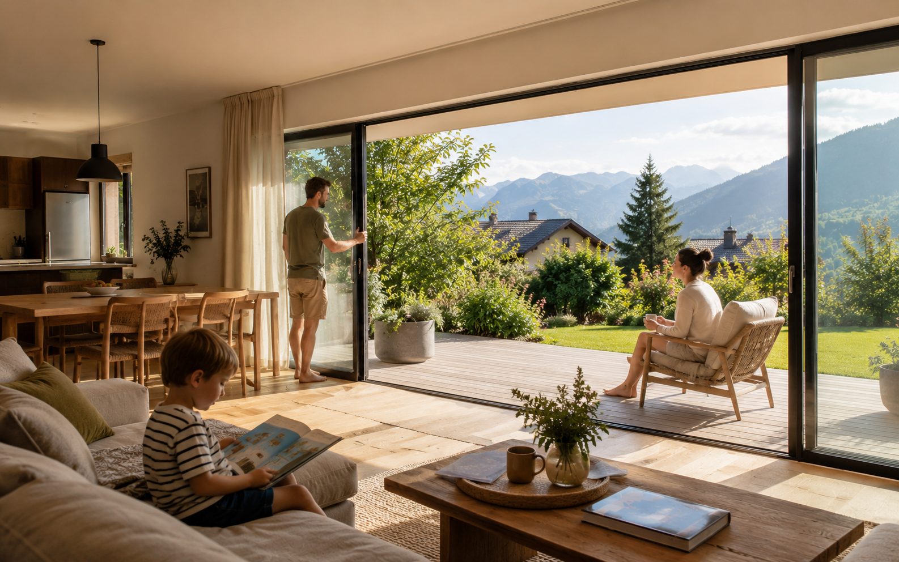

Clair de jour, seuil, isolation, passage, budget et travaux : le vrai comparatif entre coulissant et galandage.
Le vitrage doit être choisi selon la pièce, l'altitude, le bruit et la luminosité.
Ces valeurs aident à comprendre l'isolation, les apports solaires et la lumière naturelle.
Une bonne fenêtre mal posée perd une grande partie de son intérêt.
Matériau, vitrage, dépose, habillage et garanties doivent être lisibles sur le devis.
Le galandage fait rêver, mais impose plus de contraintes
Une baie à galandage disparaît dans la cloison et offre une ouverture spectaculaire. C'est très agréable pour relier séjour et terrasse, mais cette solution demande une réservation dans le mur, une bonne gestion de l'isolation, une étanchéité soignée et un budget supérieur.
Le coulissant classique est plus simple à intégrer en rénovation. Il offre déjà beaucoup de lumière et de confort, surtout avec des profils aluminium fins et un seuil bien traité.
Les critères à comparer
- Largeur d'ouverture réellement utile.
- Épaisseur disponible dans les murs ou cloisons.
- Traitement du seuil entre intérieur et terrasse.
- Exposition au vent et à la pluie.
- Performance thermique attendue.
| Solution | Avantage | Limite |
|---|---|---|
| Coulissant | Simple, fiable, bon rapport usage/prix | Une partie de la baie reste visible |
| Galandage | Ouverture maximale et effet dedans-dehors | Travaux plus lourds et isolation à surveiller |
Les questions fréquentes
Le galandage isole-t-il moins ? Il peut être performant, mais il demande une conception plus rigoureuse. En rénovation, ce point doit être vérifié très tôt.
Quel seuil choisir ? Un seuil confortable doit tenir compte de l'accessibilité, de l'eau de pluie et du niveau de terrasse.
Les points à vérifier en rénovation
En rénovation, le galandage n'est pas seulement une menuiserie : il touche au mur, à l'isolation et parfois aux finitions intérieures. Il faut donc vérifier la place disponible, la nature de la cloison et les conséquences sur le chauffage ou les prises électriques.
Le coulissant classique reste souvent le choix le plus rationnel quand on veut moderniser le séjour sans ouvrir un chantier lourd. Avec un bon vitrage et un seuil correctement traité, il apporte déjà beaucoup de confort.
Ce qui change vraiment entre coulissant et galandage
Le galandage séduit parce qu’il libère complètement le passage, mais il demande un mur capable d’accueillir le refoulement des vantaux. Le coulissant classique est souvent plus simple, plus robuste et plus facile à intégrer en rénovation.
- Mur disponible - Le galandage a besoin d’un volume libre : Radiateur, électricité, doublage, poteau ou mur porteur peuvent rendre le galandage impossible ou trop coûteux.
- Confort - Regarder seuil, étanchéité et vitrage : Une grande baie doit être confortable en hiver, stable au vent, facile à manœuvrer et bien protégée contre la surchauffe.
- Budget - Comparer la pose autant que le produit : La différence de prix ne vient pas seulement de la baie : préparation du mur, finitions intérieures et reprise des seuils pèsent beaucoup.
- Service-Public.fr - remplacement de fenêtres, volets ou portesCette fiche confirme qu’une déclaration préalable est nécessaire quand le remplacement change l’aspect extérieur du bâtiment.
- Service-Public.fr - travaux en copropriétéCette fiche rappelle que certains travaux privatifs doivent être autorisés s’ils touchent l’aspect extérieur ou des parties communes.
- Service-Public.fr - travaux extérieurs d’une maisonCette fiche sert de repère pour vérifier les cas où une autorisation d’urbanisme peut être demandée.
- ADEME - garder son logement frais en période de chaleurCette page confirme l’intérêt des protections solaires, volets et stores pour limiter la surchauffe avant qu’elle n’entre dans le logement.